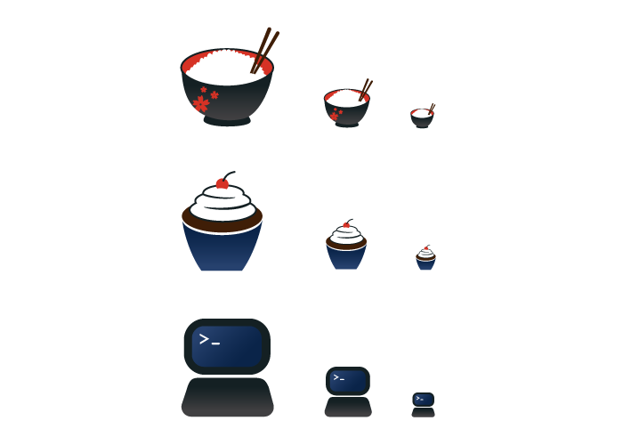

October 2, 2019
Project 2: Scalable Icons


For this scalable icon project, we had to create three icons that represent different aspects of ourselves. These icons must be designed to fit together with similar aesthetics and be scalable in three sizes: 128px, 64px, and 32px. My three icons depict one of my hobbies, a cultural aspect, and an academic aspect of myself. For my hobby, I chose baking, so I decided to create an icon of a cupcake. As a cultural aspect, I chose to create a bowl of rice because rice is a staple of Japanese cuisine. As an academic aspect, I chose to create an icon of a laptop because as a Computer Science major and a Graphic Design minor, I use my laptop on a daily basis.
My first step for this project was brainstorming three icons to represent myself. The three different topics popped in my head quickly -- a hobby, a cultural aspect, and an academic aspect. For my icon representing my Japanese culture, I came up with two ideas: a traditional Japanese teacup, and a rice bowl. For my hobby icon, I came up with two ideas at first: a bowl and whisk, and a tray of cookies. I was reluctant on creating an icon of the bowl + whisk because I created an icon of that in a previous graphic design class. For my icon representing my academics, my first thought was a laptop. However, I felt like a laptop was a very generic idea so I tried coming up with more ideas that represent my major. I played around with the concept of nodes, 0’s and 1’s, and glasses, but I had trouble creating icons out of those concepts.
I wasn’t set with all the icon designs I thought of, but I started to create the rice bowl on Illustrator first since that was the only icon I was certain of using. After designing the rice bowl, I had trouble coming up with a design for the tray of cookies that fit with the rice bowl icon, so I chose to create a cupcake for my hobby icon. Then I decided to design a laptop for my academic icon.
To make all three icons similar, I tried using the same colors - red, black, blue, brown. I also tried to keep similar shapes; since the bowl and cupcake were both rounded, I decided to round the edges of the laptop as well. Incorporating gradients in all three also helps unify them.
All three icons are scalable. From 128px to 64px, I didn’t change anything in the icons. From 64px to 32px, I only did slight modifications. The rice bowl loses the flower pattern on the bowl, and for the cupcake and laptop, I increased the spacing between the two parts.
For my favicon, I chose to use the rice bowl icon because I think that came out the best out of the three, and I think it’s the strongest icon that represents myself.